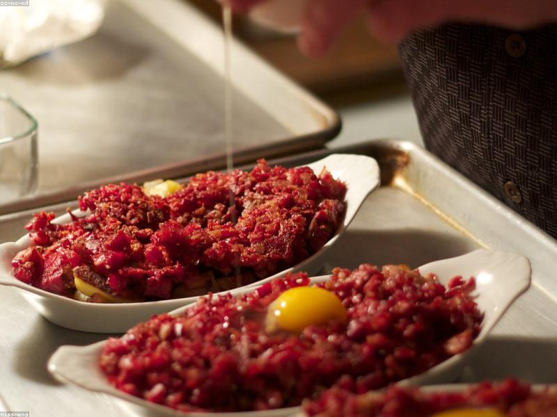

Recipes & ideas
Under 30 minutes
Take action
Leftovers have a bad reputation they don't deserve. With a little imagination, last night's dinner becomes today's best meal. Cold rice is perfect for fried rice. Roast vegetables blend into a quick soup. Stale bread turns into croutons, French toast or breadcrumbs. A handful of odd ingredients becomes a frittata, a stir-fry, or a "clean-out-the-fridge" rice bowl.
The trick is to cook with leftovers in mind. Keep a "use first" shelf in your fridge for things that need eating, label and date your leftovers, and pick one night a week to cook from whatever's already there before you shop again. You'll eat well, spend less, and waste almost nothing. EatMeFirst makes it effortless by showing you exactly which items to use up next.
